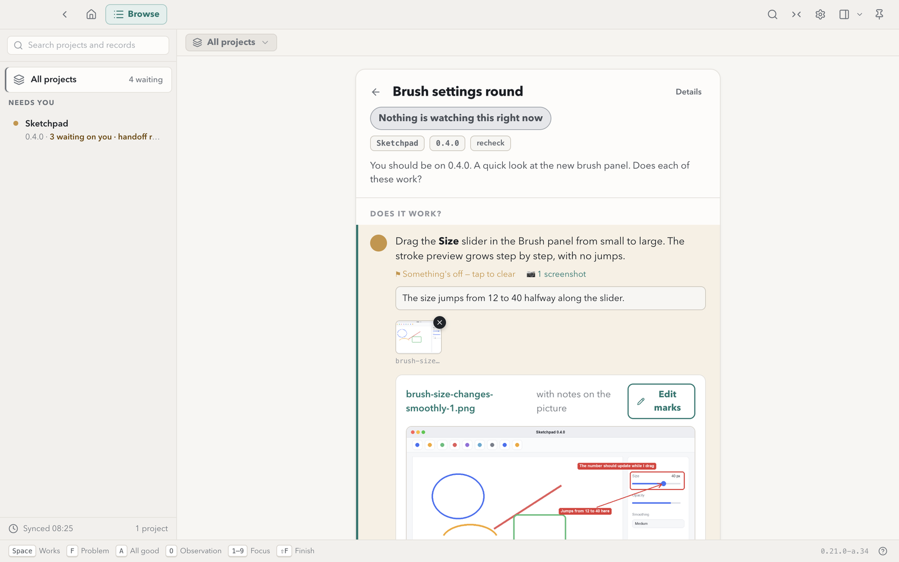
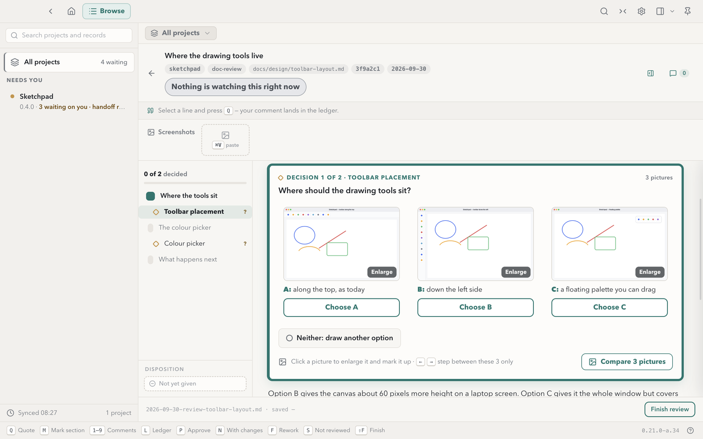
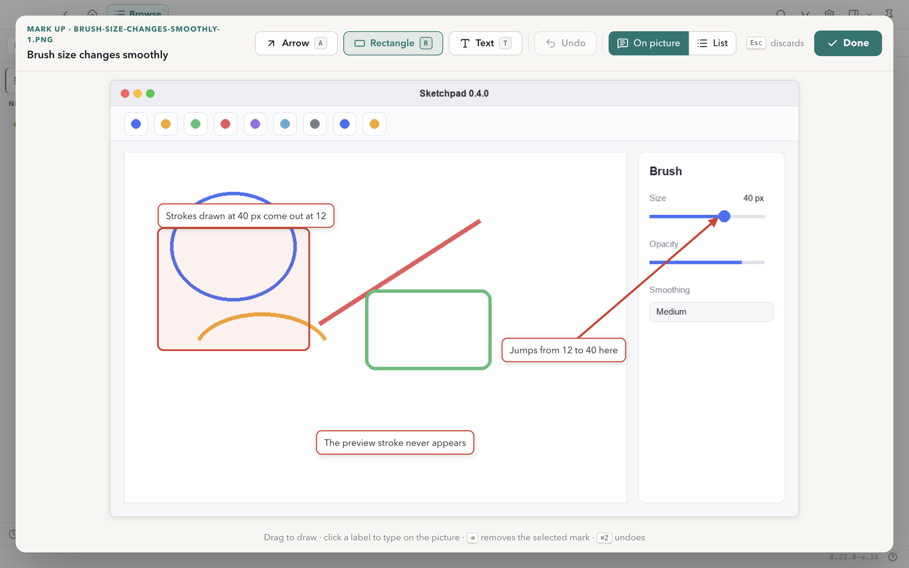

Answer your coding agents with clicks, not chat
Your agent writes a request as a Markdown file: a few things to try in the build it just made, or a design with decisions to take. Dev Traffic Control shows it, you answer with clicks, and the agent reads your answers from a file beside the request.
Apple Silicon, macOS 12 or later. Signed and notarised. Free and open source (MIT).
What it does
For developers who already work with coding agents such as Claude Code or Codex. Every picture below is from an example project.
Check what the agent built
A check request lists a few things to try, one line each. Mark each one works or not, add a comment, paste a screenshot.
The agent gets a verdict and your words for every check, not a paragraph in chat.

Decide from the pictures
A design review puts each option's picture side by side, with a button under each. Enlarge one, step through them, or open all of them in a compare view.
The rail shows how many decisions are left, so none gets missed.

Point at the problem
Draw arrows, boxes and labels on a screenshot or a review picture. The words sit on the picture, or in a numbered list if you prefer.
The agent receives each mark as words and coordinates, so it knows what you pointed at without reading pixels.

Connect your agents
Three steps, once. After that your agents file requests in your records folder.
-
Install the dev-traffic-control skill
It teaches your agent the request format. Any agent that reads skills can use it: techczech/dominiks-agent-skills › dev/dev-traffic-control.
git clone https://github.com/techczech/dominiks-agent-skills cp -R dominiks-agent-skills/dev/dev-traffic-control <your agent's skills folder> -
Tell your agent where to write
Paste this to your agent once.
Use the dev-traffic-control skill. My records folder is ~/Documents/Dev Traffic Control. When you want me to test or review something, file it there and give me the dtc:// link. -
Or look around first
The example project holds one check request, one design review and one handoff, so you can see what your agents will send.